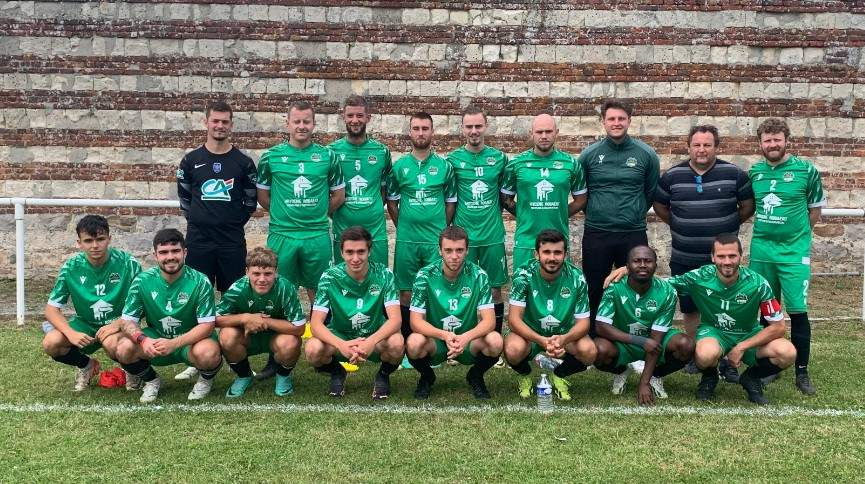
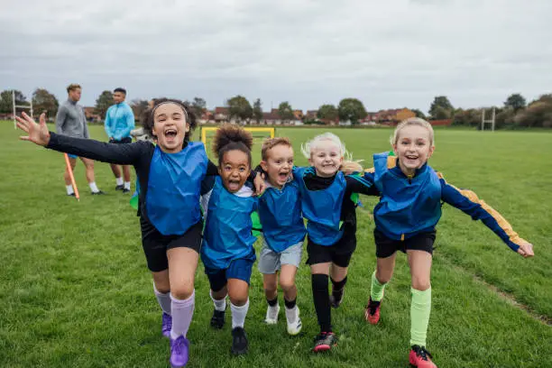

Nos Équipes
Seniors A
Notre équipe fanion évolue en championnat départemental. Elle regroupe des joueurs expérimentés et jeunes talents du club.
- Entraîneur : M. Dupont
- Capitaine : J. Martin
- Objectif : Montée en division supérieure
Seniors B

L'équipe réserve permet à chacun de progresser et de prendre du plaisir en compétition chaque week-end.
- Entraîneur : Mme Lefèvre
- Capitaine : P. Dubois
- Valeur : Esprit d'équipe et convivialité
Seniors C

La troisième équipe offre à tous la possibilité de jouer, de s'intégrer et de représenter fièrement le club.
- Entraîneur : M. Petit
- Capitaine : S. Leroy
- Ambiance : Ouverture à tous et plaisir du jeu
Jeunes
Le club accueille les jeunes dès l'école de foot, avec des éducateurs diplômés et des valeurs de respect et de convivialité.
- Catégories : U6 à U18
- Responsable jeunes : Mme Moreau
- Philosophie : Formation, respect, plaisir